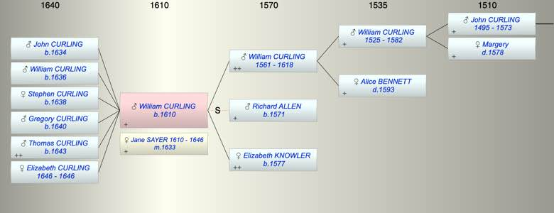

| [Index] |
| William CURLING (1610 - ) |
|  |
| b. 1610 at St Laurence |
| m. 24 Oct 1633 Jane SAYER (1610 - 1646) at Tilmanstone |
| Parents: |
| William CURLING (1561 - 1618) |
| Elizabeth KNOWLER (1577 - ) |
| Siblings (5): |
| John (1) CURLING (1597 - 1652) |
| Mary CURLING (1598 - ) |
| Susan CURLING (1600 - ) |
| Anne CURLING (1603 - ) |
| William CURLING (1609 - ) |
| Children (6): |
| John CURLING (1634 - ) |
| William CURLING (1636 - ) |
| Stephen CURLING (1638 - ) |
| Gregory CURLING (1640 - ) |
| Thomas CURLING (1643 - ) |
| Elizabeth CURLING (1646 - 1646) |
| Events in William CURLING (1610 - )'s life | |||||
| Date | Age | Event | Place | Notes | Src |
| 1610 | William CURLING was born | St Laurence | Note 1 | ||
| 1618 | 8 | Death of father William CURLING (aged 57) | Note 2 | ||
| 24 Oct 1633 | 23 | Married Jane SAYER (aged 23) | Tilmanstone | ex FMP PR | |
| 1634 | 24 | Birth of son John CURLING | Tilmanstone | Note 3 | |
| 1636 | 26 | Birth of son William CURLING | Tilmanstone | Note 4 | |
| 1638 | 28 | Birth of daughter Stephen CURLING | St Peter, Thanet | Note 5 | |
| 1640 | 30 | Birth of son Gregory CURLING | St Peter, Thanet | Note 6 | |
| 1643 | 33 | Birth of son Thomas CURLING | St Laurence | Note 7 | |
| 1646 | 36 | Birth of daughter Elizabeth CURLING | Note 8 | ||
| 1646 | 36 | Death of daughter Elizabeth CURLING | St Laurence | buried 25 May 1646 | |
| 1646 | 36 | Death of wife Jane SAYER (aged 36) | St Laurence | Note 9 | |
| Created on a Mac™ using iFamily for Mac™ on 8 Oct 2023 |